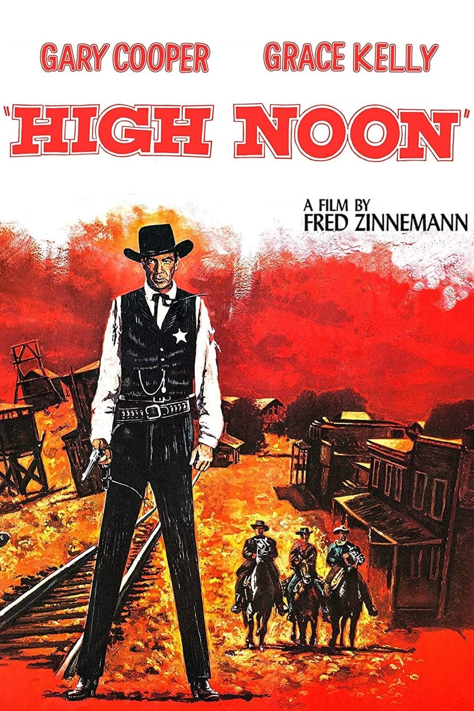
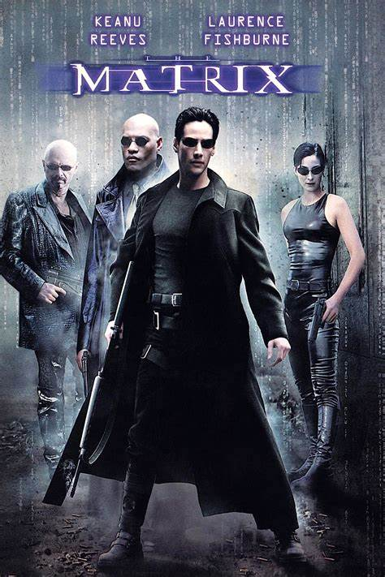
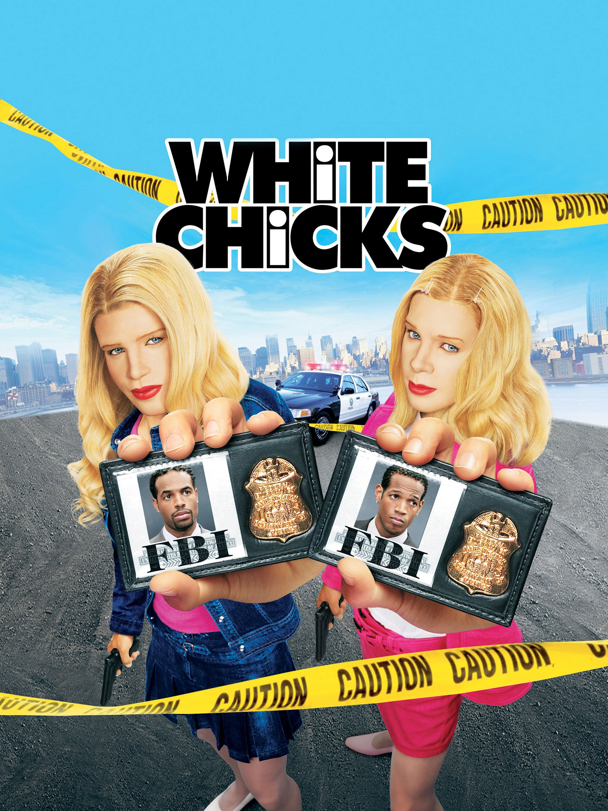

Hi everyone, thank you for being here. I'm Kathe and today I want to share with you some of my favorite movies.
Who doesn't love movies, right? I love exploring different genres,
from romance to cowgirl, to crime movies, tech movies, and of course, comedies.
Romantic Movie: "Dear John"
"Dear John" is a romantic film based on the novel by author Nicholas Sparks. The story follows John Tyree, played by Channing Tatum, a young soldier who falls in love with Savannah Curtis, played by Amanda Seyfried, during a furlough.
Their romance blossoms through letters while John serves in the military.
However, life's changing circumstances and challenges pose significant obstacles to their love. The film explores themes of sacrifice, loyalty and how life choices can influence relationships. With emotional twists, "Dear John" offers a poignant experience about the power of love and the strength of unbreakable bonds.
Western Movies (Cowgirls): "High Noon "
"High Noon " is a western classic in which Sheriff Will Kane, on the verge of retirement, learns that a criminal he helped incarcerate is being released and seeks revenge. Despite the lack of support from the community, Kane decides to stay and confront the criminal, facing danger alone.
The film unfolds in real-time, highlighting individual bravery in the face of adversity. Gary Cooper's performance in the title role is acclaimed, and the film It has left a lasting mark on the history of western cinema.

Tech Movie : "The Matrix"
"The Matrix" is a science fiction film written and directed by the Wachowski sisters, released in 1999. The story follows Thomas Anderson, a software programmer who,
under the alias of Neo, discovers the truth about the reality he perceives. He lives in a seemingly normal world, but discovers that it's just a simulation created by intelligent machines to keep humanity subjugated while extracting their energy.

Comedy Movie: "White Chicks"
"White Chicks", The plot follows two FBI agents, Kevin and Marcus Copeland, played by brothers Shawn Wayans and Marlon Wayans. After a cosmetic incident prevents them from performing a
protective mission as themselves, they decide to assume the identity of heiresses Brittany and Tiffany Wilson, two white socialites. Throughout the film, the agents face comical situations and challenges as they try to maintain their façade and protect the Wilson sisters.

Netfix
Here you can watch any movie, documentary, series, novel, anime, mmm it's not bad.